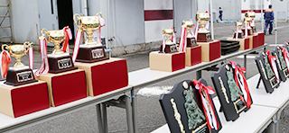
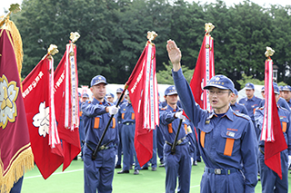
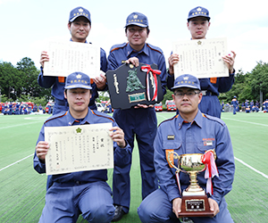
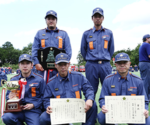
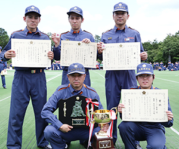
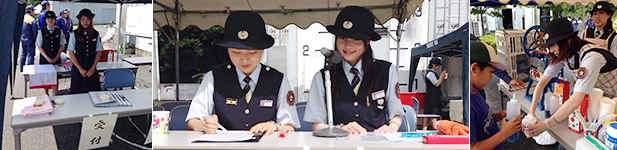

第29回 飯能消防団 消防操法大会
第29回 飯能消防団 消防操法大会| 目的 | 消防団員の平素の訓練意欲と士気の高揚に努め、火災防御の基本となる操法技術の練磨、向上を図り、もって消防活動の発展に寄与することを目的とする。 |
| 主催 | 飯能消防団 |
| 日時 | 平成26年6月29日（日）午前7時30分から午後1時頃まで（雨天決行） |
| 会場 | 飯能日高消防署屋外訓練場（駐車場は飯能看護学校駐車場に駐車してください。送迎バスが出ますのでご利用ください。） |
| お問合せ | 飯能市役所 電話：042-973-2111(代表) 危機管理室消防団担当（内線623） |
| 消防操法の種別 | 第1部 ポンプ車操法（5隊） / 第2部 小型ポンプ操法（23隊） |
◆出場順位
|
|
|
  選手宣誓：第6分団1部 雛元 弘二 |
||||||||||||||||||||||||||||||||||||||||||||||||||||||||||||||||||
第29回飯能消防団消防操法大会 成績
| ポンプ車の部 | ||||||||||||||||||||||||||||||||||||||||||||
|  ★優勝 第5分団
|
|
■個人賞（最優秀選手賞）
|
||||||||||||||||||||||||||||||||||||||||||
| 小型ポンプの部（1組） | ||||||||||||||||||||||||||||||||||||||||||||||||||||||||||||||||||
 ★優勝 第10分団2部1班
|
|
■個人賞（最優秀選手賞）
|
||||||||||||||||||||||||||||||||||||||||||||||||||||||||||||||||
| 小型ポンプの部（2組） | ||||||||||||||||||||||||||||||||||||||||||||||||||||||||||||||
|  ★優勝 第7分団2部
|
|
■個人賞（最優秀選手賞）
|
||||||||||||||||||||||||||||||||||||||||||||||||||||||||||||

女性団は受付、接待、アナウンスなどを担当しました。接待係りは、ディズニーランドに負けないぐらい美味しいキャラメルポップコーンと、かき氷を作り子供達に振る舞いました。